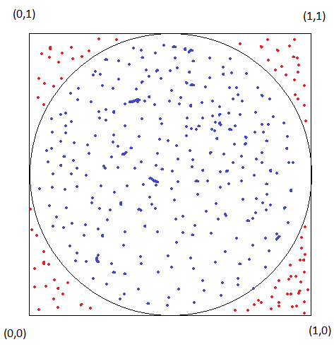

First of all let's talk briefly about what is a Monte-Carlo simulation.
Simply put, it is a computational method that uses a large number of random samples to obtain a result. It is used in a
wide range of disciplines like mathematics, computer graphics and physical sciences.
In this blog, we will see how we can use this method to estimate the value of the mathematical constant 𝛑.
How can a large number of random samples be used to estimate 𝛑?
Suppose we have a circle inscribed in a square, if we throw a pile of sand randomly on the square, some grains will end up
inside the circle and others will end up outside of it.
We can compute the proportion of grains that ended up inside the circle, this value equals the proportion of the circle in relation
to the square.

This picture illustrates what is written above, the blue dots represent the grains that are inside the circle and the red ones
represent the ones outside of it.
But why is this true? The Monte-Carlo simulation is an example of the "Law of Large Numbers (LLN)", this is not the focus of this
blog, if you want to know more you can check this wikipedia article
Law_of_large_numbers.